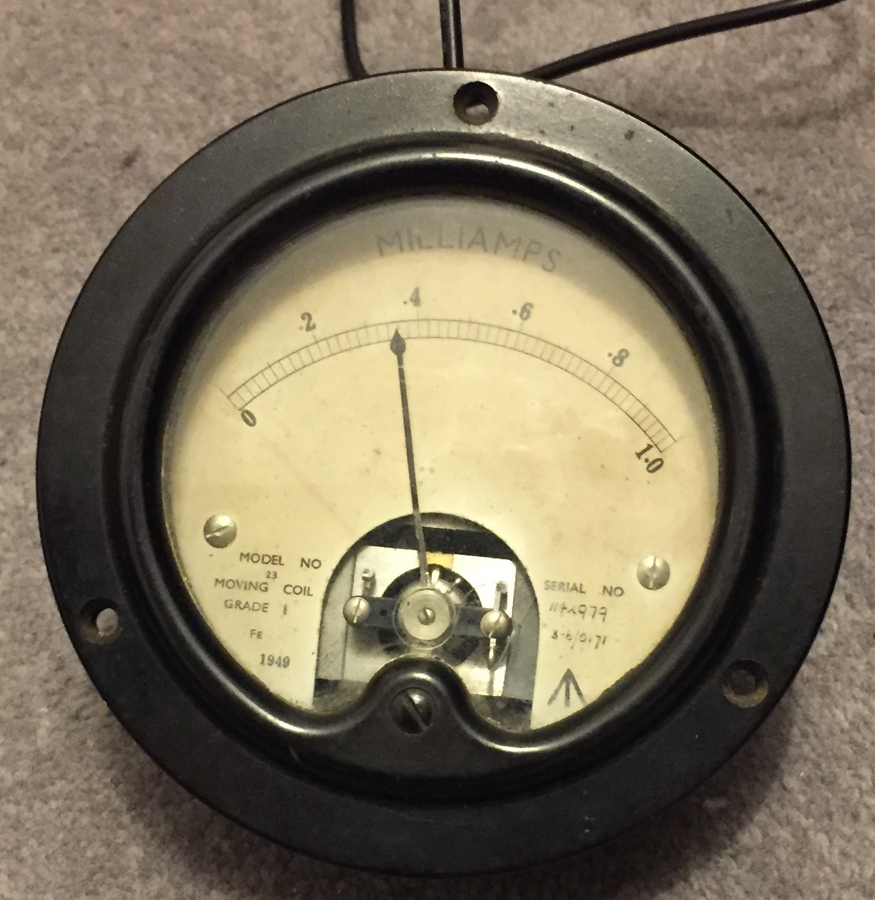
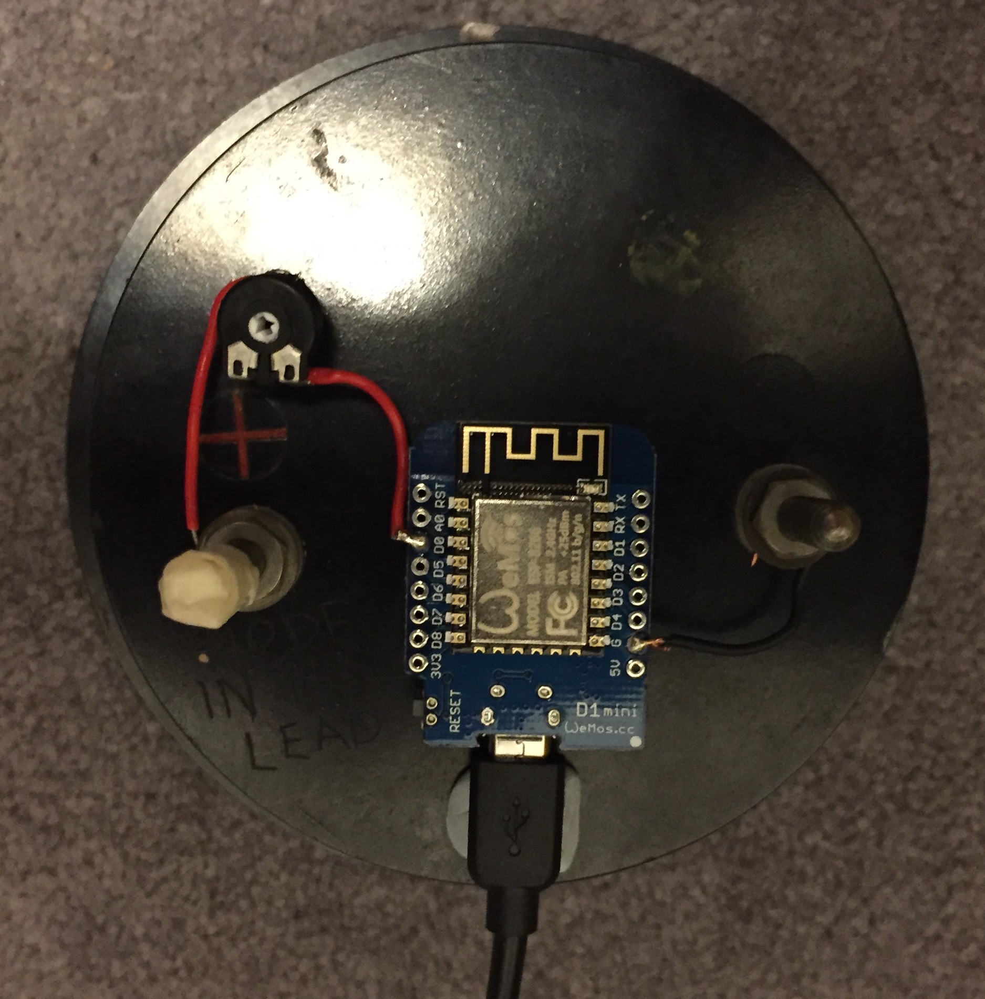

My boss, Steve, likes steampunk. He also liked the display we used to have to monitor what was going on with our servers. So, for Christmas I decided to make him an old-fashioned dial display that shows the current load on our servers. It uses the local WiFi to connect to AWS Lambda to get the current value of the relevant CloudWatch metric, in our case requests/minute to our main servers.
The load meter on Steve's desk behind his lamp. Boxing day, so not much load.

This is the meter, showing 3600 requests/minute to our main servers. The black cable provides power. Data is over wifi.
The display is an unmodified 1mA ammeter built in 1949. I got it from ElectroJumble.

This is the wiring, showing a WEMOS D1 Mini wired to the ammeter inputs in series with a variable resistor. The black cable is power. The gold looking zig-zag is the aerial. The mess on the top of the left peg is masking tape.